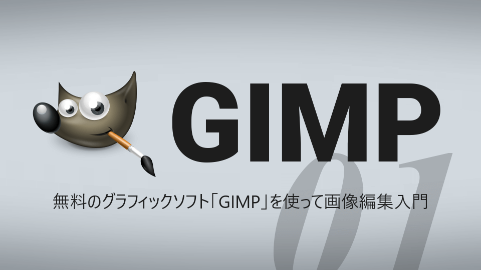
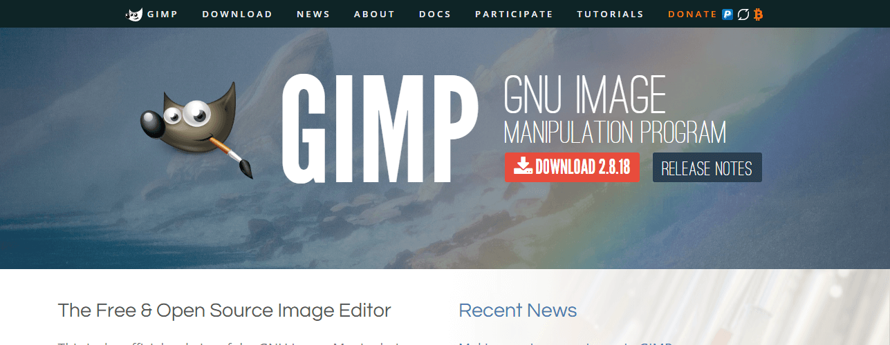
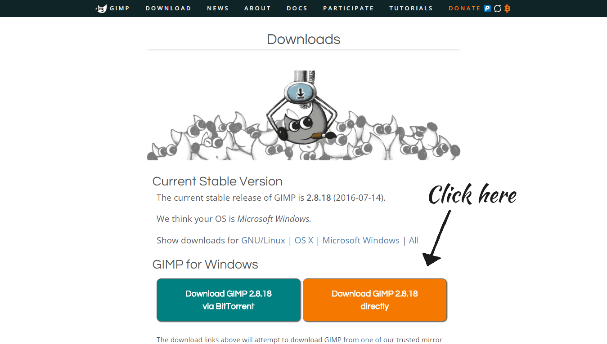
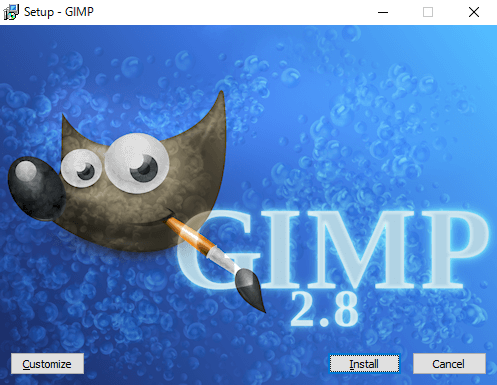
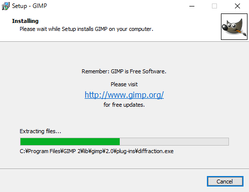
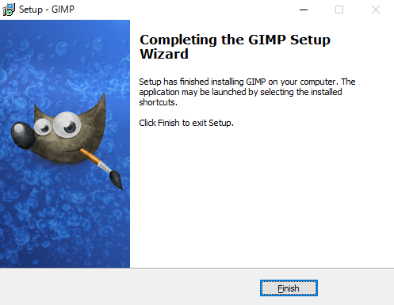
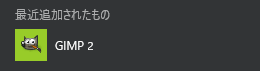
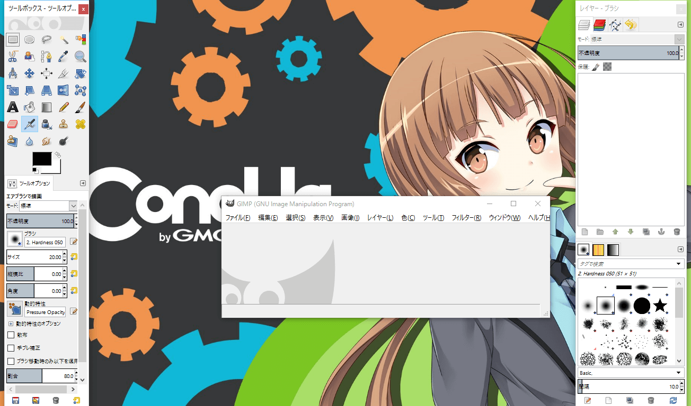
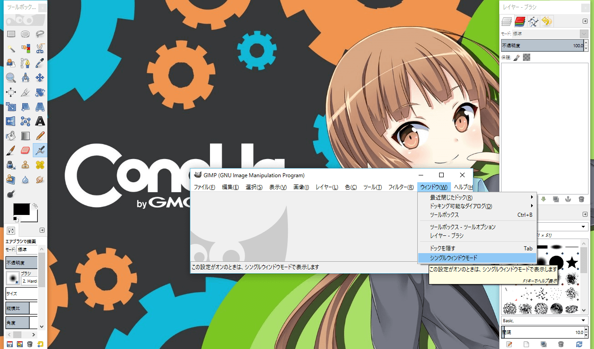
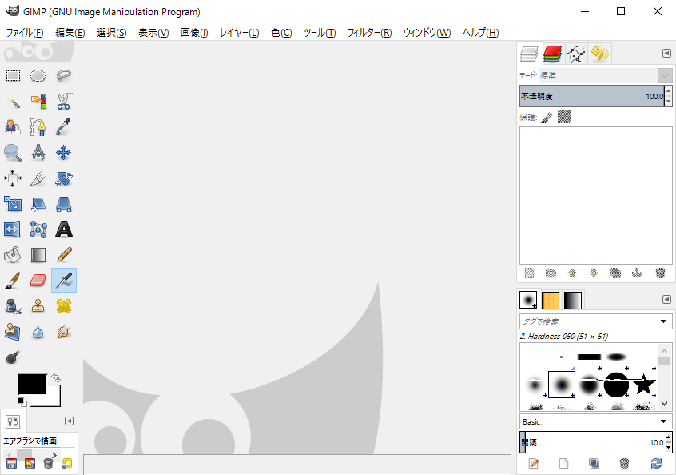

はじめに
Web関連で紹介されているグラフィックソフトはPhotoshopなどの有償のものが主流となっています。
ですが、これらのソフトは値段が高くてなかなか手に入れることが難しい方もいらっしゃるでしょう。
そんな方へ、有償ソフトにも引けを取らない完全無料で使える GIMP をご紹介していきます。

今回の内容
この記事では、GIMPとはからインストール、起動までをご紹介します。
GIMPとは
GIMP（GNU Image Manipulation Program）は様々なOSで利用できるオープンソースの画像編集・加工ソフトです。
GIMPは、Windows、OS X、LinuxなどのOSで使用できるクロスプラットフォームの画像エディタです。このソフトはフリーウェアで、ソースコードを改変・公開することができます。
GIMPは、グラフィックデザイナー・フォトグラファー・イラストレーター・科学者、いずれであっても仕事を効率化するための高度なツールを提供します。多くのカスタマイズオプションとサードパーティのプラグインにより、生産性をさらに向上させることができます。
インストール
さて、GIMPをインストールしてみましょう。
ご利用中のOSに合わせてインストールしてください。
Windows
ここでは、2017年1月2日時点のインストール方法をご紹介します。
ダウンロード
まず、公式サイトにアクセスします。
GIMP - GNU Image Manipulation Programつづいて、ダウンロードページへ移動します。

ダウンロードページのDownload GIMP 2.8.18 directlyからインストーラをダウンロードします。
（2.8.18は現在のバージョンです）

gimp-2.8.18-setup.exeというファイルがダウンロードできました！
インストール
それでは、ダウンロードしたファイルを実行してGIMPをインストールしていきましょう。
はじめに表示される言語の設定はインストーラだけなのでEnglishでいいでしょう。
つづいて、おしゃれな画面が表示されます。
Customizeを選択すると、規約の確認やインストール先の変更などができますが、特に気にしない場合はInstallを押してインストールを始めてください。

インストール中…

以下の画面になればインストールは終了です！Finishを押してウィンドウを閉じてください。

以上でインストールは完了です！GIMPを起動に移動してください。
OS X
準備中
Linux
準備中
GIMPを起動する
スタートメニューなどからGIMPを起動してください。
（画像ははWindows）

起動すると、以下のようにウィンドウが３つ開くかと思います。

パネルを一つにまとめる
この画面のまま作業しても構いませんが、個人的にはドッグ（右とか左のやつ）がバラバラだと使いづらいので、こいつらを一つのウィンドウにまとめます。
真ん中のウィンドウ上部のツールバーでウィンドウ > シングルウィンドウモードを選択します。

すると、以下のようにGIMPがシングルウィンドウモードとなります。

今後、このブログではシングルウィンドウモードで解説していきます。
おわりに＆次回
今回は、GIMPのインストールと起動をご説明しました。
次回は、GIMPでらくがきしながら基本的な機能を使っていきます！
次回リンク
〔GIMP入門#2〕GIMPでらくがきしてみよう！ 【準備中】